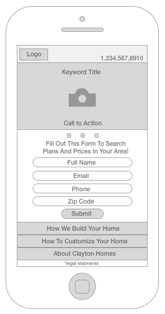

As a part of a team project, I researched best practices for mobile form fills and designed mocks for a proposal.
Sketch, Paper Wireframes
2015
As a part of the Search team's efforts to increase lead numbers generated through mobile form fills from paid search ads, we decided to redesign the mobile landing page format. The mobile landing page was not built with a responsive design and had a similar format to the desktop landing page. Half the long form was below the fold.
I began by researching best practices for mobile form fill landing pages and discussing my finding with the Search team. We discussed shortening the form, ensuring the full form was above the fold, and selecting high resolution images as a background. With the feedback from the team, I created a few sample wireframes. The form went through multiple rounds of edits since we had to determine whether or not we had the technical abilities for our system to properly read the information from the shortened forms.
My original designs included only an updated high resolution image, strong call to action, and form. However, after meeting with the team again, we decided to add more keyword filled text to enhance the landing page quality score.
To incorporate the additional text and keep everything within view above the fold, I implemented a drop down menu below the form. In order to make room for this we had to futher shorten the form with only the name, email, phone, and zip code included. We again had to speak with the tech and sales department, but we concluded that information was sufficient for callers making proper contact.
As a part of the final design I incorporated a scrolling image and CTA instead of a static image, so this page could be used for multiple search ads or promotions if needed. I presented my final wireframe design to the team. After a discussion, we removed arrows from the rotating images to decrease user distractions. We also removed the clickable phone number from the bottom of the page to make more room for the drop down menu and increase the spacing between the form fill boxes.
Next, we worked with the legal department to incorporate a legal advisement that would not disrupt the user experience. We only needed to add one line beneath the drop down content, and the design was approved. I created example mocks, and we presented the design to upper management.
The mobile landing page was approved by upper mangement, but due to a large number of requests for the tech department, our project was delayed. We were unable to test the performance of our design against the old design.